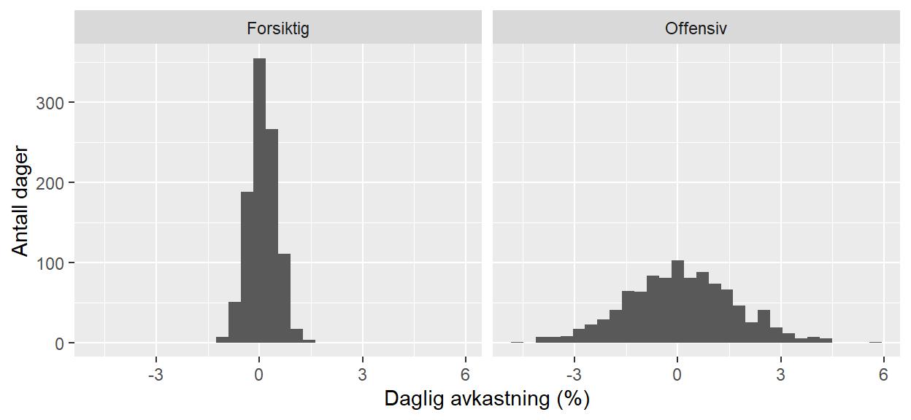
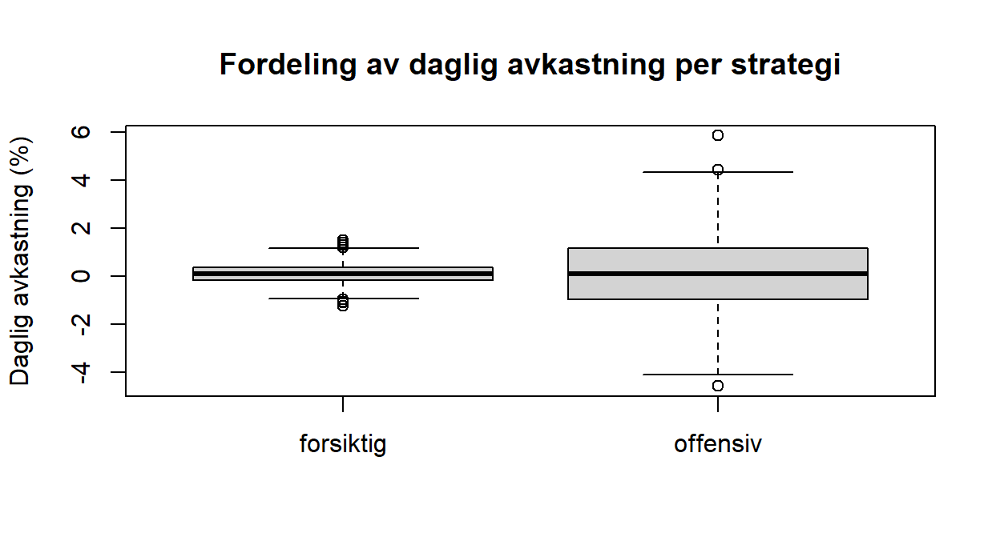
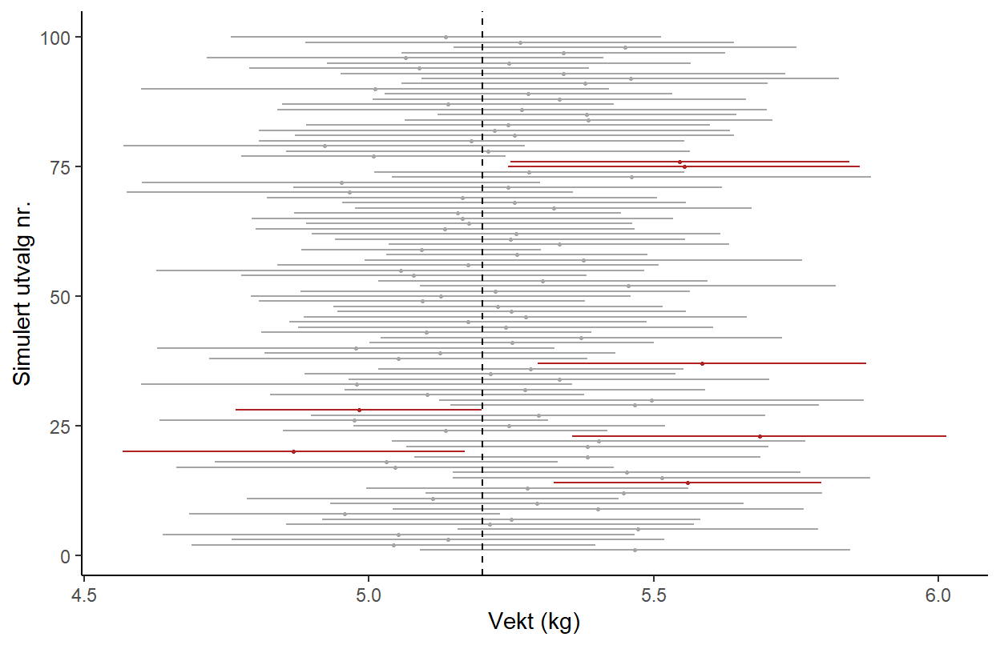
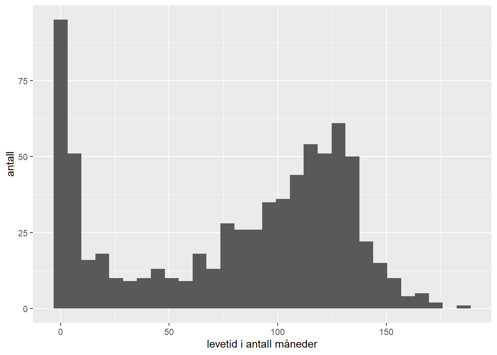
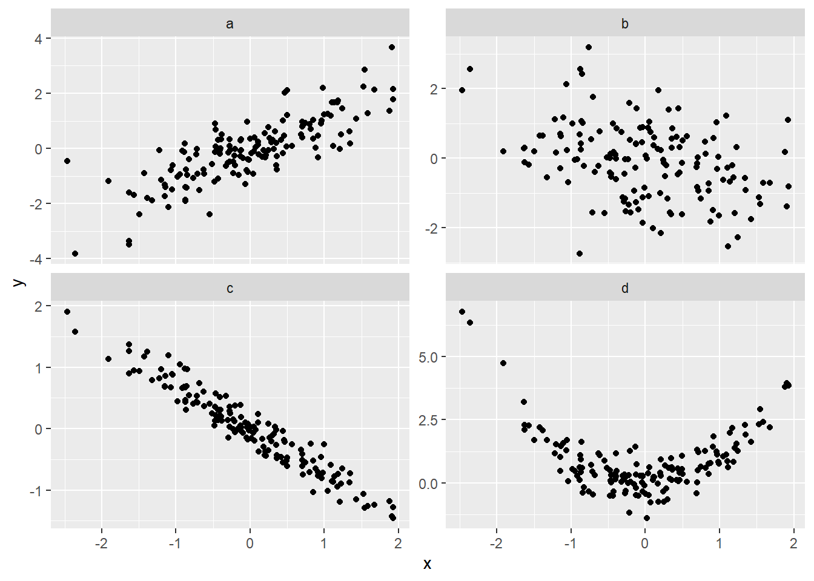
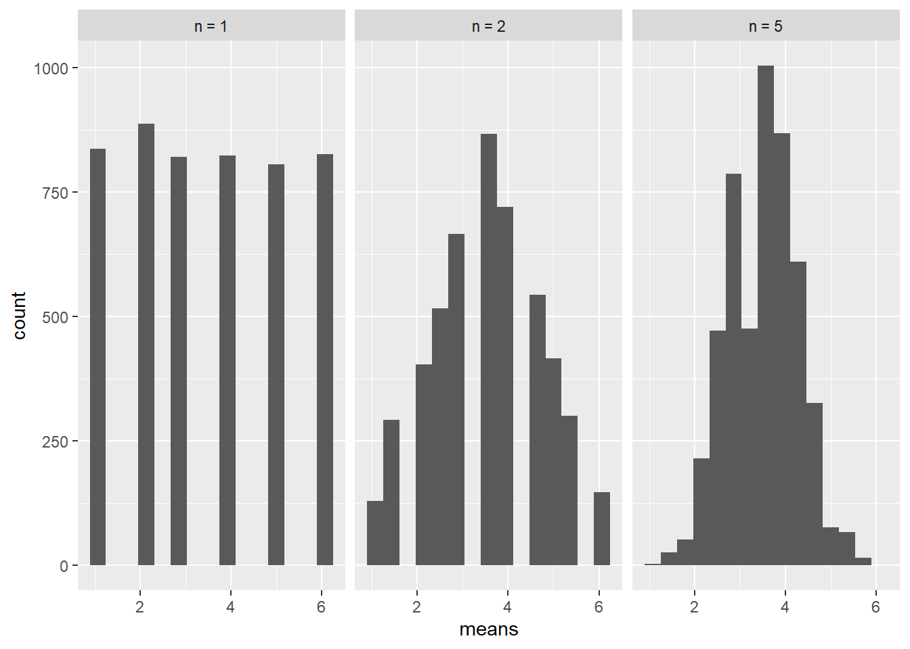

set.seed(42)
avkastning <- data.frame(
forsiktig = rnorm(1000, mean = 0.10, sd = 0.4),
offensiv = rnorm(1000, mean = 0.10, sd = 1.6)
)2 Grunnleggende statistikk
I denne modulen introduserer vi en del grunnleggende statistiske begreper. Mye vil oppleves som repetisjon, mens noe vil være nytt. Noe er veldig praktisk ved at vi kan bruke det direkte i eksempler, mens andre ting er mer teoretisk av natur. Felles for det vi skal se på her er at vi kommer til å bruke mange av begrepene vi lærer senere i kurset.
Vi begynner med deskriptiv statistikk, som har to hovedformål. Det første er å bli kjent med et datasett: før vi setter i gang med mer avansert analyse, vil vi danne oss et bilde av hva slags tall vi har foran oss, om det finnes åpenbare feil eller ekstremverdier, og hvilke mønstre som umiddelbart trer frem. Det andre formålet er å presentere resultater slik at de er lette å forstå for andre. Et viktig poeng er at deskriptiv statistikk verken generaliserer fra utvalget til en større populasjon eller tester årsakssammenhenger. Vi lar rett og slett dataene fortelle sin egen historie.
Deretter tar vi steget videre til statistisk inferens. Da ser vi på datasettet vårt som et utvalg trukket fra en større populasjon, og vi bruker utvalget til å si noe om populasjonen. Det tvinger oss til å holde orden på hva som er sant i populasjonen og hva vi bare har regnet ut fra dataene våre, og til å forstå hvordan et anslag varierer fra utvalg til utvalg. Nøkkelbegrepet er samplingfordelingen, som ligger i bunnen av alt vi gjør senere i kurset, fra hypotesetesting til regresjon.
I videoforelesningene går vi gjennom noen slides, og vi skriver et R-skript. Du kan laste disse ned ved å klikke på lenkene under:
Slides til “Grunnleggende statistikk”
R-script til “Grunnleggende statistikk”
TIPS: Hvis du ønsker å laste ned lysbildene som PDF trykker du på linken over, velger “Skriv ut”, og så skriver du ut som PDF. Før du gjør det bør du scrolle gjennom alle sidene slik at ligningene vises korrekt.
2.1 Variabeltyper og målenivå
Dette delkapittelet inneholder flere videoer. Bruk nedtrekksmenyen øverst til venstre i videovinduet for å bla mellom dem.
Før vi beskriver et datasett, er det nyttig å vite hva slags variabler vi har med å gjøre, for det avgjør hvilke regnestykker og figurer som gir mening. Vi skiller grovt mellom to hovedtyper:
- Kategoriske variabler deler observasjonene inn i grupper. Eksempler er kjønn, parti, bostedsfylke eller karakter (A til F). Vi kan telle hvor mange som havner i hver kategori, men det gir sjelden mening å regne ut et «gjennomsnitt» av dem.
- Numeriske (kvantitative) variabler er tall vi faktisk kan regne med, som alder, inntekt, høyde eller antall barn.
Innenfor disse to typene er det vanlig å skille mellom fire målenivåer, etter hvor mye informasjon verdiene bærer:
- Nominalnivå (kategorisk): rene merkelapper uten naturlig rekkefølge, for eksempel parti eller sivilstand. Det eneste vi kan gjøre, er å avgjøre om to verdier er like eller ulike (\(=\), \(\neq\)). En kategorisk variabel med bare to mulige verdier (ja/nei) kalles dikotom.
- Ordinalnivå (kategorisk): kategorier med en naturlig rangering, men uten at avstanden mellom trinnene er veldefinert. Svaralternativene fra «svært misfornøyd» til «svært fornøyd» er ordinale: vi vet at «fornøyd» er bedre enn «misfornøyd» (\(<\), \(>\)), men ikke hvor mye bedre.
- Intervallnivå (numerisk): tall der avstandene er meningsfulle, men der nullpunktet er vilkårlig. Temperatur i Celsius er det klassiske eksempelet: forskjellen mellom 10 og 20 grader er like stor som mellom 20 og 30, men 0 °C betyr ikke «ingen temperatur», og 20 °C er ikke dobbelt så varmt som 10 °C. Vi kan legge til og trekke fra (\(+\), \(-\)), men forholdstall gir ikke mening.
- Forholdsnivå (numerisk): som intervallnivå, men med et ekte nullpunkt, slik at også forholdstall gir mening. Inntekt, vekt, tidsbruk og antall er forholdsdata: 0 kr betyr ingen inntekt, og 100 000 kr er dobbelt så mye som 50 000 kr. Her er alle de vanlige regneoperasjonene tillatt (\(=, \neq, <, >, +, -, \times, /\)).
Nivåene bygger på hverandre: hvert nivå tillater alt det forrige gjør, pluss litt mer. Målenivået styrer også hvilke beskrivende mål som gir mening. For en nominal variabel er typetallet det eneste fornuftige sentralmålet; for ordinaldata kan vi i tillegg bruke medianen; og først for intervall- og forholdsdata er gjennomsnittet meningsfullt.
Når vi beskriver en tallvariabel numerisk, er det særlig to spørsmål vi stiller: hvor ligger tyngdepunktet i dataene, og hvor spredt er de rundt dette tyngdepunktet? Har vi to variabler, kommer et tredje spørsmål til: henger de sammen?
2.2 Sentraltendens
Dette delkapittelet inneholder flere videoer. Bruk nedtrekksmenyen øverst til venstre i videovinduet for å bla mellom dem.
Tyngdepunktet, eller sentraltendensen, kan måles på flere måter:
- Gjennomsnittet \(\overline{X} = \frac{1}{n}\sum_{i=1}^n X_i\) er summen av alle verdiene delt på antallet. Dette er det vanligste målet, men det trekkes lett i retning av ekstremverdier.
- Medianen er den midterste verdien når observasjonene sorteres etter størrelse.
- Typetallet er den verdien som forekommer oftest.
Hvorfor bry seg med mer enn gjennomsnittet? Fordi medianen er langt mer robust mot ekstremverdier. Tenk deg lønningene på en liten arbeidsplass med ti ansatte, der én av dem tilfeldigvis er konsernsjefen. Gjennomsnittslønnen kan da bli misvisende høy og gi et helt feilaktig bilde av hva en «typisk» ansatt tjener, mens medianen er upåvirket av hvor ekstremt høy den ene lønnen er. Nettopp derfor rapporteres for eksempel medianinntekt, og ikke gjennomsnittsinntekt, i mange sammenhenger.
2.3 Spredning
Dette delkapittelet inneholder flere videoer. Bruk nedtrekksmenyen øverst til venstre i videovinduet for å bla mellom dem.
To datasett kan ha nøyaktig samme gjennomsnitt og likevel se helt forskjellige ut, fordi verdiene er ulikt spredt. Det vanligste spredningsmålet er standardavviket
\[s = \sqrt{\frac{1}{n-1}\sum_{i=1}^n (X_i - \overline{X})^2},\]
som grovt sagt måler hvor langt observasjonene i gjennomsnitt ligger fra \(\overline{X}\). Kvadratet \(s^2\) kalles variansen. Standardavviket har samme måleenhet som dataene selv (kroner, centimeter, …) og er derfor lettest å tolke.
Et alternativ som (i likhet med medianen) er robust mot ekstremverdier, er å bruke prosentiler. Den \(p\)-te prosentilen er den verdien som har \(p\) % av observasjonene under seg. De tre kvartilene (25-, 50- og 75-prosentilene) deler dataene i fire like store deler, og avstanden mellom øvre og nedre kvartil kalles interkvartilbredden (IQR). Et boksplott er en effektiv grafisk fremstilling av nettopp disse størrelsene.
2.4 Sammenheng mellom to variabler
Dette delkapittelet inneholder flere videoer, blant annet en korrelasjonsquiz med fasit. Bruk nedtrekksmenyen øverst til venstre i videovinduet for å bla mellom dem.
Har vi målt to variabler for de samme observasjonene (for eksempel høyde og vekt), vil vi ofte vite om de henger sammen. Grafisk gjør vi det med et spredningsplott, og numerisk med korrelasjonskoeffisienten \(r\). Den forteller oss hvor nær punktene ligger en rett linje, og har tre egenskaper det er verdt å merke seg:
- \(r\) ligger alltid mellom \(-1\) og \(1\).
- Fortegnet forteller om samvariasjonen er positiv (begge øker sammen) eller negativ (den ene øker når den andre synker).
- Tallverdien forteller hvor sterk den lineære sammenhengen er, men sier ingenting om stigningstallet.
Her lurer en klassisk felle: at \(r = 0\) betyr ikke at variablene er uavhengige. Korrelasjonskoeffisienten fanger bare opp lineære sammenhenger. To variabler kan ha en tydelig, men krum, sammenheng (for eksempel U-formet) og likevel ha korrelasjon null. Det motsatte holder derimot alltid: er to variabler uavhengige, er de også ukorrelerte.
2.5 Å presentere data
Dette delkapittelet inneholder flere videoer. Bruk nedtrekksmenyen øverst til venstre i videovinduet for å bla mellom dem.
Deskriptiv statistikk handler like mye om å presentere tall som om å regne dem ut. Dette er en ferdighet det er verdt å ta på alvor: evnen til å lage en overbevisende tabell eller figur kan være direkte avgjørende for gjennomslagskraften din, enten du legger fram resultater for en sjef, en kunde eller en eksamenssensor.
Et av de mest berømte eksemplene på god deskriptiv statistikk er Charles Minards figur fra 1869 over Napoleons felttog mot Moskva, som vi ser nærmere på i videoforelesningen. På ett enkelt bilde klarer den å formidle tid, antall soldater, geografisk posisjon og temperatur samtidig, et forbilledlig eksempel på hvor mye informasjon en gjennomtenkt figur kan bære. I forelesningen ser vi også på noen grelle eksempler på det motsatte: hvordan grafiske virkemidler kan brukes til å gi skjeve og misvisende fremstillinger.
2.6 Et eksempel i R
La oss se hvordan vi kan beskrive et datasett i praksis. Tenk deg den daglige avkastningen (i prosent) til to ulike investeringsstrategier (en forsiktig og en offensiv) over 1000 handledager. Her simulerer vi tallene selv, slik at du kan kjøre koden og få nøyaktig de samme resultatene:
Vi regner ut de sentrale målene fra teorien over for hver strategi. Her bruker vi summarise() fra dplyr, som vi ble kjent med i forrige modul:
library(dplyr)
avkastning %>%
summarise(
snitt_forsiktig = mean(forsiktig),
sd_forsiktig = sd(forsiktig),
snitt_offensiv = mean(offensiv),
sd_offensiv = sd(offensiv)
) snitt_forsiktig sd_forsiktig snitt_offensiv sd_offensiv
1 0.08967023 0.4010085 0.09149121 1.577698De to strategiene har praktisk talt samme gjennomsnittlige daglige avkastning (rundt 0,09 %), men legg merke til hvor forskjellige standardavvikene er. Det illustrerer et hovedpoeng fra teorien: gjennomsnittet alene forteller ikke hele historien. Spredningen er vel så viktig. Det kommer enda tydeligere fram i et histogram for hver strategi. Da er det viktig at de to histogrammene tegnes med samme akse, ellers skalerer figuren bort nettopp den forskjellen vi vil vise. Vi stabler derfor de to kolonnene oppå hverandre i en lang tabell og lar facet_wrap() lage ett panel per strategi, med felles akse:
library(ggplot2)
lang <- data.frame(
strategi = rep(c("Forsiktig", "Offensiv"), each = 1000),
avkastning = c(avkastning$forsiktig, avkastning$offensiv)
)
ggplot(lang, aes(x = avkastning)) +
geom_histogram(bins = 30) +
facet_wrap(~ strategi) +
labs(x = "Daglig avkastning (%)", y = "Antall dager")
Den offensive strategien har en langt bredere fordeling (større svingninger, og dermed høyere risiko) selv om den i snitt gir like mye som den forsiktige, se Figur 2.1.
Et boksplott oppsummerer mye av den samme informasjonen enda mer kompakt, og egner seg godt til å sammenlikne de to strategiene side om side. Her bruker vi den innebygde funksjonen boxplot(), som tar en data.frame med to kolonner og tegner én boks for hver:
boxplot(avkastning,
ylab = "Daglig avkastning (%)",
main = "Fordeling av daglig avkastning per strategi")
Slik leser vi Figur 2.2 (jf. spredningsmålene i avsnittet om spredning): streken inne i boksen er medianen, selve boksen dekker interkvartilbredden fra nedre til øvre kvartil, og «værhårene» strekker seg ut til de mest ekstreme observasjonene som ikke regnes som uteliggere. Punktene utenfor værhårene er nettopp uteliggere. Igjen ser vi at de to strategiene har omtrent samme midtpunkt, men at den offensive har en mye høyere boks og lengre værhår, altså langt større spredning.
2.7 Inferens: populasjoner, utvalg og estimatorer
You can, for example, never foretell what any one man will do, but you can say with presicion what an average number will be up to. Individuals vary, but percentages remain constant. So says the statistician.
Hittil har vi beskrevet data slik de forelå. Nå tar vi et viktig steg videre: vi tenker på datasettet vårt som et utvalg trukket fra en større populasjon, og vi vil bruke utvalget til å si noe om populasjonen. Dette er kjernen i statistisk inferens, og et tema som følger oss gjennom resten av kurset. Herfra bygger vi videre på sannsynlighetsregningen fra MET2: fordelinger, stokastiske variabler, forventning og varians. Ligger dette langt bak i bevisstheten, kan det være lurt å friske det opp.
Populasjonen er hele mengden vi egentlig er interessert i, for eksempel alle norske velgere, eller all fisk i en oppdrettsmerd. En parameter er et tall som beskriver populasjonen, slik som den sanne forventningen \(\mu\), det sanne standardavviket \(\sigma\), eller den sanne andelen \(p\). Problemet er at vi nesten aldri kan måle hele populasjonen; vi må nøye oss med et utvalg. Ut fra utvalget regner vi så ut en estimator (også kalt en observator), en «regel» for å gjette parameterverdien, for eksempel gjennomsnittet \(\overline{X}\) som et anslag på \(\mu\).
Det helt sentrale poenget er dette: siden observasjonene i utvalget er tilfeldige, blir også estimatoren tilfeldig. Trekker vi et nytt utvalg, får vi et litt annet gjennomsnitt. Estimatoren er altså selv en stokastisk variabel, med sin egen fordeling. Å få tak på nettopp den fordelingen er nøkkelen til nesten alt vi gjør senere i kurset, og vi kommer tilbake til den så snart vi har på plass verktøyene som trengs.
Hele resonnementet hviler på at utvalget er tilfeldig. Med et tilfeldig utvalg mener vi at enhetene trekkes fra populasjonen ved en form for loddtrekning: hver enhet har samme sjanse til å bli med, uavhengig av de andre. Det er nettopp dette som gjør at vi kan behandle observasjonene \(X_1, \ldots, X_n\) som uavhengige trekninger fra den samme fordelingen, og hele inferensmaskineriet senere i kurset bygger på den forutsetningen.
Det avgjørende ordet er representativt. Et tilfeldig utvalg speiler populasjonen, slik at et utvalgsgjennomsnitt blir et rimelig anslag på populasjonsgjennomsnittet. Trekker vi derimot utvalget skjevt, blir anslaget systematisk feil, og da hjelper det ikke å samle inn mer data. Vanlige fallgruver er selvseleksjon (bare de mest engasjerte svarer på en frivillig undersøkelse) og bekvemmelighetsutvalg (vi spør dem som er lettest å nå). Et berømt eksempel er magasinet Literary Digest, som i 1936 spådde feil vinner av det amerikanske presidentvalget: utvalget var på over to millioner personer, men trukket blant bil- og telefoneiere, som den gang var systematisk rikere enn velgerne flest. Utvalget var enormt, men skjevt, og et langt mindre, virkelig tilfeldig utvalg traff bedre.
I praksis er et perfekt tilfeldig utvalg vanskelig å få til, men det er idealet vi strekker oss mot, og forutsetningen vi antar er (tilnærmet) oppfylt i regnestykkene under.
2.8 Populasjonen som sannsynlighetsmodell
Dette delkapittelet inneholder flere videoer. Bruk nedtrekksmenyen øverst til venstre i videovinduet for å bla mellom dem.
Hittil har vi snakket om populasjonen som en konkret samling enheter: all fisken i en oppdrettsmerd, alle norske velgere. Da er en parameter som \(\mu\) rett og slett gjennomsnittet regnet over samtlige enheter, og å trekke et utvalg betyr å plukke ut noen av dem tilfeldig.
Det finnes en annen, og ofte mer fruktbar, måte å tenke på en populasjon: som en sannsynlighetsfordeling. Da ser vi på hver observasjon som en tilfeldig trekning fra en fordeling, og «populasjonen» er selve denne fordelingen, altså en matematisk beskrivelse av hvilke verdier som er mulige og hvor sannsynlige de er. Parameteren \(\mu\) er forventningen i fordelingen, \(\sigma\) er standardavviket, og så videre.
Denne fordelingstankegangen er spesielt naturlig når «alle mulige observasjoner» ikke er en fast, tellbar mengde. Den daglige avkastningen til en investeringsstrategi er et godt eksempel: det finnes ingen ferdig liste over «alle avkastninger», men vi kan tenke oss at hver dags avkastning trekkes fra en underliggende fordeling. De to synsmåtene er dessuten forenlige: for en stor populasjon vil histogrammet over alle enhetene se ut som en jevn fordelingskurve, og det er nettopp den kurven fordelingsmodellen beskriver.
En sannsynlighetsmodell er en slik matematisk beskrivelse av en stokastisk variabel. Fra MET2 kjenner du flere: den kontinuerlige normalfordelingen \(N(\mu, \sigma^2)\), som beskriver mange naturlige størrelser og spiller en helt sentral rolle i dette kurset, og diskrete modeller som binomisk- og poissonfordelingen. En fordeling er fullt bestemt av noen få parametre (for normalfordelingen forventningen \(\mu\) og standardavviket \(\sigma\)), og vi skriver gjerne \(X \sim N(\mu, \sigma^2)\) for å si at \(X\) følger en slik fordeling.
Poenget for oss er dette: når vi antar at observasjonene våre er trekninger fra en fordeling med forventning \(\mu\) og varians \(\sigma^2\), kan vi bruke sannsynlighetsregningen til å si noe presist om hvordan estimatorene våre oppfører seg. Det er akkurat det vi bygger videre på når vi snart skal finne samplingfordelingen til gjennomsnittet.
2.9 Forventning og varians
Når vi tenker på en observasjon \(X\) som en trekning fra en fordeling, er de to viktigste kjennetegnene ved fordelingen forventningen og variansen.
Forventningen \(\textrm{E}(X)\) er tyngdepunktet i fordelingen, altså den verdien vi i gjennomsnitt ender opp med dersom vi trekker svært mange ganger. For populasjonen er nettopp \(\textrm{E}(X) = \mu\), populasjonsgjennomsnittet.
Variansen \(\textrm{Var}(X) = \textrm{E}\!\left[(X - \mu)^2\right] = \sigma^2\) måler hvor mye verdiene typisk spriker rundt forventningen. Standardavviket \(\sigma = \sqrt{\textrm{Var}(X)}\) er kvadratroten av variansen, og har samme måleenhet som \(X\) selv.
Formelt er forventningen et vektet gjennomsnitt av alle mulige verdier, der vekten er hvor sannsynlig hver verdi er, altså en sum for en diskret variabel og et integral for en kontinuerlig:
\[\textrm{E}(X) = \sum_x x\,P(X = x) \quad (\text{diskret}), \qquad \textrm{E}(X) = \int_{-\infty}^{\infty} x\,f(x)\,\textrm{d}x \quad (\text{kontinuerlig}).\]
Variansen regnes ut med de samme summene eller integralene, bare med \((x - \mu)^2\) der det over står \(x\). Definisjonene er de samme som i MET2, og her er det først og fremst regnereglene under vi får bruk for.
Det som gjør disse to størrelsene så anvendelige, er at de følger noen enkle regneregler. La \(a\) og \(b\) være konstanter og \(X, Y\) stokastiske variabler. For forventningen gjelder:
\[\textrm{E}(aX + b) = a\,\textrm{E}(X) + b, \qquad \textrm{E}(X + Y) = \textrm{E}(X) + \textrm{E}(Y).\]
Forventningen er altså lineær: den kan flyttes rett inn i en sum og forbi konstanter. For variansen gjelder:
\[\textrm{Var}(aX + b) = a^2\,\textrm{Var}(X), \qquad \textrm{Var}(X + Y) = \textrm{Var}(X) + \textrm{Var}(Y) \quad (\text{når } X \text{ og } Y \text{ er uavhengige}).\]
To ting er verdt å merke seg. Et konstantledd \(b\) påvirker ikke variansen: å flytte hele fordelingen sidelengs endrer ikke spredningen. En skaleringsfaktor \(a\) slår derimot inn i annen potens, fordi varians måles i kvadrerte enheter (og standardavviket dermed skaleres med \(|a|\)). Og mens forventningen alltid kan splittes over en sum, krever den enkle variansregelen at leddene er uavhengige.
2.10 Utvalgsstørrelser og populasjonsstørrelser
Et poeng det er verdt å feste seg ved med en gang, er at nesten alle størrelsene vi jobber med, finnes i to varianter: én for populasjonen og én for utvalget. Populasjonsstørrelsen er den sanne, men ukjente verdien vi er ute etter. Utvalgsstørrelsen er det vi faktisk regner ut fra dataene, og som vi bruker som et anslag på den første.
| Størrelse | I populasjonen (sann, ukjent) | I utvalget (beregnet fra data) |
|---|---|---|
| Gjennomsnitt | populasjonsgjennomsnitt \(\mu\) | utvalgsgjennomsnitt \(\overline{X}\) |
| Standardavvik | populasjonsstandardavvik \(\sigma\) | utvalgsstandardavvik \(s\) |
| Andel | populasjonsandel \(p\) | utvalgsandel \(\widehat{p}\) |
Skillet er grunnleggende, og de to variantene er lette å blande sammen. Når vi snakker om «gjennomsnittet», må vi hele tiden være bevisste på om vi mener det sanne populasjonsgjennomsnittet \(\mu\) (som vi sjelden kjenner) eller utvalgsgjennomsnittet \(\overline{X}\) (som vi regner ut fra dataene våre, og som vil variere fra utvalg til utvalg). Notasjonen hjelper oss å holde dem fra hverandre: populasjonsstørrelser skrives gjerne med greske bokstaver (\(\mu\), \(\sigma\), \(p\)), mens utvalgsstørrelser skrives med latinske bokstaver eller med en «hatt», som i \(\overline{X}\) og \(\widehat{p}\).
2.11 Samplingfordelinger
Dette delkapittelet inneholder flere videoer. Bruk nedtrekksmenyen øverst til venstre i videovinduet for å bla mellom dem.
Når vi trekker et utvalg og regner ut et kjennetegn ved det, for eksempel gjennomsnittet \(\overline{X}\) eller en andel \(\widehat{p}\), vil resultatet variere fra utvalg til utvalg fordi observasjonene er tilfeldige. Samplingfordelingen er fordelingen til et slikt utvalgskjennetegn: den forteller hvilke verdier estimatoren kan ta, og hvor sannsynlige de er, over alle tenkelige utvalg av samme størrelse. Det er denne fordelingen som gjør statistisk inferens mulig, for den forteller oss hvor presist et estimat er. Her tar vi for oss samplingfordelingen til gjennomsnittet; andelen kommer vi tilbake til litt lenger ned.
Anta at observasjonene \(X_1, X_2, \ldots, X_n\) er uavhengige, med samme forventning \(\mu\) og varians \(\sigma^2\), og se på gjennomsnittet \(\overline{X} = \frac{1}{n}\sum_{i=1}^n X_i\). Nå får vi bruk for regnereglene fra avsnitt Seksjon 2.9. Forventningen følger av at forventningen er lineær:
\[\textrm{E}(\overline{X}) = \frac{1}{n}\sum_{i=1}^n \textrm{E}(X_i) = \frac{1}{n}\cdot n\mu = \mu.\]
For variansen bruker vi at observasjonene er uavhengige, og at faktoren \(1/n\) kvadreres:
\[\textrm{Var}(\overline{X}) = \frac{1}{n^2}\sum_{i=1}^n \textrm{Var}(X_i) = \frac{1}{n^2}\cdot n\sigma^2 = \frac{\sigma^2}{n}, \qquad \textrm{det vil si} \qquad \sigma(\overline{X}) = \frac{\sigma}{\sqrt{n}}.\]
To ting er verdt å dvele ved. For det første er gjennomsnittet forventningsrett: i snitt treffer det den sanne verdien \(\mu\). For det andre, og dette er kanskje det viktigste enkeltresultatet i modulen, skrumper standardavviket til gjennomsnittet inn som \(1/\sqrt{n}\) når utvalget vokser. Med andre ord: jo flere observasjoner vi samler inn, jo mer presist blir anslaget vårt. Men presisjonen øker bare med kvadratroten av \(n\), så for å halvere usikkerheten må vi firedoble antall observasjoner.
Men legg merke til hva vi ikke har funnet ut ennå: vi kjenner nå forventningen og variansen til \(\overline{X}\), men ikke selve formen på samplingfordelingen. Er den normalfordelt, eller skjev? Det er akkurat dette spørsmålet sentralgrenseteoremet svarer på i neste delkapittel.
2.12 Sentralgrenseteoremet
Dette delkapittelet inneholder flere videoer. Bruk nedtrekksmenyen øverst til venstre i videovinduet for å bla mellom dem.
Dersom \(X\)-ene i utgangspunktet er normalfordelte, er gjennomsnittet også eksakt normalfordelt. Men hva om vi ikke kjenner fordelingen til den enkelte observasjonen? Her kommer statistikkfagets kanskje mest bemerkelsesverdige resultat til unnsetning. Sentralgrenseteoremet sier at fordelingen til gjennomsnittet nærmer seg normalfordelingen når \(n\) blir stor, nesten uansett hvordan de enkelte observasjonene er fordelt. Det er dette som gjør normalfordelingen så gjennomgripende i statistikken: så snart vi jobber med gjennomsnitt (eller summer) av mange observasjoner, dukker den nesten alltid opp. En vanlig tommelfingerregel er at tilnærmingen er god når vi har mer enn 50–100 observasjoner.
Med forventningen \(\mu\) og variansen \(\sigma^2/n\) fra forrige delkapittel kan vi dermed skrive opp samplingfordelingen til gjennomsnittet på lukket form:
\[\overline{X} \;\sim\; N\!\left(\mu,\; \frac{\sigma^2}{n}\right).\]
Dette gjelder eksakt når observasjonene selv er normalfordelte, og tilnærmet ellers, så lenge \(n\) er stor nok.
Påstanden er drøy nok til at den fortjener å bli etterprøvd, og det kan du gjøre selv i Figur 2.3. Velg en populasjonsfordeling (den øverste figuren viser hvordan enkeltobservasjonene er fordelt), og dra deretter i bryteren for \(n\). For hver innstilling trekkes 2000 nye utvalg, og den nederste figuren viser hvordan de 2000 gjennomsnittene fordeler seg. Den røde kurven er normalfordelingen \(N(\mu,\, \sigma^2/n)\) som teoremet lover.
Legg merke til to ting mens du drar i bryteren. Formen blir symmetrisk og klokkeformet selv når populasjonen er tydelig skjev eller har to topper, og det skjer overraskende raskt. Og fordelingen til gjennomsnittet blir smalere og smalere, akkurat som \(\sigma/\sqrt{n}\)-regelen fra forrige delkapittel sier: firedobler du \(n\), halveres bredden.
Sentralgrenseteoremet formuleres gjerne for summen \(S_n = X_1 + \cdots + X_n\) i stedet for gjennomsnittet. Da sier det at også \(S_n\) er tilnærmet normalfordelt, \(S_n \sim N(n\mu,\, n\sigma^2)\). Dette er egentlig samme utsagn: gjennomsnittet er jo bare summen delt på \(n\), så formen (normal) er den samme, mens forventning og varians skaleres deretter.
Det er dette resultatet vi bygger videre på i hypotesetesting og konfidensintervaller, og det har en tvillingsøster for andeler som vi ser på nå.
2.13 Samplingfordelingen til en andel
Dette delkapittelet inneholder flere videoer. Bruk nedtrekksmenyen øverst til venstre i videovinduet for å bla mellom dem.
Ofte er vi ikke ute etter et gjennomsnitt, men en andel, for eksempel andelen velgere som støtter et bestemt parti, eller andelen defekte enheter i en produksjon. En observert andel \(\widehat{p}\) kan skrives som et gjennomsnitt av nuller og enere (fiasko og suksess), og da slår sentralgrenseteoremet til på nytt:
\[\widehat{p} \;\sim\; N\!\left(p,\; \frac{p(1-p)}{n}\right).\]
Tilnærmingen regnes som god når \(np > 5\) og \(n(1-p) > 5\). Legg merke til at også her avtar usikkerheten som \(1/\sqrt{n}\). Det er derfor en meningsmåling med rundt 1000 respondenter kan gi et brukbart anslag på hva et helt land mener.
2.14 Gode estimatorer
Dette delkapittelet inneholder flere videoer. Bruk nedtrekksmenyen øverst til venstre i videovinduet for å bla mellom dem.
Det finnes gjerne flere mulige estimatorer for samme parameter, og da må vi kunne vurdere hvilken som er best. Tre egenskaper står sentralt:
- En estimator er forventningsrett dersom forventningen er lik den sanne parameterverdien, \(\textrm{E}(\widehat{\theta}) = \theta\). Da bommer den ikke systematisk, verken for høyt eller for lavt.
- Blant flere forventningsrette estimatorer foretrekker vi den mest effektive, altså den med minst varians.
- En estimator er konsistent dersom den nærmer seg den sanne verdien når utvalget vokser. Gjennomsnittet er konsistent nettopp fordi variansen \(\sigma^2/n\) går mot null når \(n\) øker.
2.15 Konfidensintervall
Vi kan lage et punktestimat av en forventningsverdi ved å ta gjennomsnittet av observasjonene. Men et enkelt tall sier ingenting om hvor sikkert anslaget er, og derfor er vi ofte mer interessert i et konfidensintervall: et helt intervall av rimelige verdier, der bredden forteller oss hvor presist estimatet er.
La oss se et eksempel. Tenk deg at vi vil anslå den forventede vekten til laksen i en stor oppdrettsmerd. Vi kan ikke veie all fisken, så vi trekker et tilfeldig utvalg på 25 laks og veier dem. Vi simulerer et slikt utvalg:
set.seed(1)
# Vekten (i kg) til 25 tilfeldig valgte laks
vekt <- rnorm(25, mean = 5.2, sd = 0.8)Punktestimatet vårt for den forventede vekten er rett og slett utvalgsgjennomsnittet. I praksis kjenner vi ikke det sanne standardavviket i populasjonen, så vi må estimere det med utvalgsstandardavviket \(s\). Denne ekstra usikkerheten gjør at vi bruker t-fordelingen i stedet for normalfordelingen når vi finner den kritiske verdien. For et 95 %-konfidensintervall henter vi verdien fra t-fordelingen med \(n - 1\) frihetsgrader ved hjelp av qt():
gj.snitt <- mean(vekt) # utvalgsgjennomsnittet, vårt punktestimat
s <- sd(vekt) # utvalgsstandardavviket (vi kjenner ikke det sanne)
n <- length(vekt) # antall observasjoner
t_krit <- qt(0.975, df = n - 1) # kritisk verdi fra t-fordelingen
# Nedre og øvre grense i konfidensintervallet (LCL og UCL):
LCL <- gj.snitt - t_krit * s / sqrt(n)
UCL <- gj.snitt + t_krit * s / sqrt(n)
c(LCL, gj.snitt, UCL)[1] 5.021184 5.334932 5.648680Den kritiske verdien qt(0.975, df = 24) er omtrent 2,06, altså litt større enn 1,96 fra normalfordelingen. Det gjør intervallet en tanke bredere, og det er rimelig: vi betaler en liten pris i presisjon fordi vi måtte estimere standardavviket i stedet for å kjenne det på forhånd.
Selve fortolkningen av et konfidensintervall er lett å misforstå, og verdt å bruke litt tid på. Hovedpoenget er:
- Et 95 %-konfidensintervall skal ikke tolkes som at «sannsynligheten for at den sanne parameterverdien ligger i intervallet er 95 %».
- Den korrekte tolkningen er: «Dersom vi gjentatte ganger trakk nye utvalg av samme størrelse fra populasjonen og regnet ut et nytt konfidensintervall hver gang, ville 95 av 100 slike intervaller inneholde den sanne parameterverdien».
Forskjellen er subtil, men viktig. Problemet med den første formuleringen er at den gir inntrykk av at det er parameteren som er tilfeldig og hopper inn og ut av et fast intervall. Det motsatte er tilfellet: den sanne parameterverdien er fast, mens det er grensene til konfidensintervallet som er tilfeldige, siden de regnes ut fra et tilfeldig utvalg. Bredden til intervallet er dermed et uttrykk for usikkerhet, eller motsatt: presisjon.
Den korrekte tolkningen handler altså om noe vi aldri får se: alle de utvalgene vi kunne ha trukket. Men i en simulering kan vi faktisk se dem. I Figur 2.4 har vi gjentatt laksemålingen 100 ganger, med et nytt utvalg på 25 fisk hver gang, og regnet ut et nytt 95 %-konfidensintervall for hvert av dem:

Legg merke til at intervallene ligger på litt ulike steder og har litt ulik bredde, mens den sanne verdien står helt stille. 7 av de 100 intervallene bommer, mot 5 forventet i snitt (også det tallet varierer fra simulering til simulering). Poenget er at vi i praksis bare trekker ett av disse utvalgene, og da vet vi aldri om vi endte opp med et grått eller et rødt intervall. Det er prosedyren som treffer 95 ganger av 100, ikke det ene intervallet vi sitter med.
2.16 Kontrollspørsmål
Når du har vært gjennom dette stoffet skal du forhåpentligvis være i stand til å diskutere følgende spørsmål med f.eks. en medstudent:
- Hva er forskjellen på deskriptiv statistikk og statistisk inferens?
- Deskriptiv statistikk kan gjøres grafisk eller numerisk, eventuelt som tabeller av ulike numeriske mål. Nevn noen fordeler og ulemper man må veie mot hverandre når vi skal velge mellom grafisk og numerisk deskriptiv statistikk.
- Hva er en samplingfordeling?
- Hva sier sentralgrenseteoremet?
- Hva mener en statistiker når hen sier at “gjennomsnittet konvergerer som \(1/\sqrt{n}\)”?
- Hva er samplingfordelingen til et gjennomsnitt?
- Hva er samplingfordelingen til en andel?
- Hva vil det si at et estimator er forventningsrett?
- Hva vil det si at et estimator er konsistent?
2.17 Oppgaver
Til de fleste oppgavene under ligger det et løsningsforslag som du folder ut ved å trykke på Løsning. Rådet vårt er at du først forsøker å løse oppgaven skikkelig på egen hånd, og heller bruker løsningsforslaget etterpå til å kontrollere svaret ditt (eller som en pekepinn dersom du står helt fast). Du lærer langt mer av å bryne deg på oppgaven selv enn av å lese løsningen.
2.17.1 Teorioppgaver
- Beskriv kort forskjellen mellom deskriptiv statistikk og statistisk inferens.
Løsning
Beskrivende statistikk bearbeider og presenterer data for å belyse faktiske forhold. Statistisk inferens, også kalt slutningsstatistikk, er å gjøre slutninger om populasjonen basert på det vi observerer i utvalget.
- Skattebetalere som fyller ut egenmeldingen sin blir spurt de følgende spørsmålene. Hvilken type data utgjør svarene og hvilke regneoperasjoner er tillatt?
- Er det første gang du fyller ut egenmeldingen din?
- Hvor lang tid brukte du på å fylle ut egenmeldingen?
- Hvor enkelt/vanskelig var det å fylle ut egenmeldingen? (Veldig enkelt, nokså enkelt, hverken enkelt eller vanskelig, nokså vanskelig, veldig vanskelig)
Løsning
- Nominale data: =, ≠
- Forholdsdata: =, ≠, <, >, +, -, *, /
- Ordinale data: =, ≠, <, >
- Du får oppgitt at gjennomsnittlig startlønn for NHH studenter etter endt utdanning er 700 000kr. Median startlønnen er 600 000kr. Hva forteller disse tallene deg?
Løsning
Selv om den gjennomsnittlige startlønnen er 700 000kr, så får halvparten av arbeidstakerne 600 000kr eller mindre. Det forteller også at det er noen arbeidstakere som drar gjennomsnittet opp.
- En videregående skole rapporterer at gjennomsnittsfraværet i antall dager i løpet av ett skoleår er 10 dager. Medianen er 3,5 dager. Hva forteller de to målene oss, og hvilke av de to beskriver best fraværet? Hvorfor?
Løsning
Det gjennomsnittlige fraværet er høyere enn medianen. Dette forteller oss at noen elever har høyt fravær som drar gjennomsnittet opp. Disse elevene er ikke representative for det store flertallet. Halvparten av elevene har 3.5 eller mindre dagers fravær. Derfor er medianen et mer robust sentermål, som ikke blir påvirket av store uteliggere.
- Du skal ta en språktest før utveksling og kan velge mellom to ulike språkkurs som skal forberede deg til testen. Begge kursene har rapportert kvartilene til testresultatene oppgitt i antall poeng studentene deres fikk på testene:
| Kvartil | Kurs nummer 1 | Kurs nummer 2 |
|---|---|---|
| Første kvartil | 230 | 225 |
| Andre kvartil | 240 | 235 |
| Tredje kvartil | 250 | 270 |
Hvordan tolker du kvartilene og hvilket kurs ville du ha valgt?
Løsning
Kvartilene kan fortelle oss noe om nivået og variasjonen i poengsummene til studentene som har tatt de to kursene. Vi ser at kurs nummer 1 har en symmetrisk fordeling med en median som er høyere enn kurs nummer 2. På en annen side har poengfordelingen til kurs nummer 2 en lengre høyre hale hvor tredje kvartilen tilsier at hele 25 % vil få 270 poeng eller mer. Det tilsvarende tallet for kurs nummer én er 250. Samlet sett er det kanskje “tryggere” med kurs nummer 1, mens det potensielle læringsutbytte har “større tak” i kurs nummer to.
- MET4 ble et år rettet av to sensorer og et boxplot av poengene de ga sine respektive kandidater var som følger:

Hva kan du si om karakterfordelingen til de to sensorene?
Løsning
De to sensorene har begge en median rundt 60 poeng, så halvparten av alle studenter får under 60 poeng og den andre halvdelen får over 60 poeng. Men Sensor 2 har større spredning i sine poeng og vil følgelig fordele studentene ut mer på karakterskalaen sammenlignet med Sensor 1.
- Du er kvalitetsansvarlig for et produkt og samler inn data på levetiden i måneder til produktet. Et histogram over disse dataene ser ut som følger:

Hva sier histogrammet deg om produktet?
Løsning
Her ser vi en slags badekar-formet fordeling som ofte går igjen for levetiden til produkter. En rekke produkter går i stykker de første månedene. Dette kan være pga av produksjonsfeil som da slår ut tidlig i bruksperioden. Resten av produktene har en mer normalfordelt levetid med et gjennomsnitt rundt 120 måneder.
- Kovariansen til to variabler fra et utvalg har blitt beregnet til -150. Videre får du vite at utvalgsstandardavviket til den ene variabelen er 12 og 16 for den andre. Regn ut (utvalgs-) korrelasjonskoeffisienten \(r\) og bruk denne til å beskrive sammenhengen mellom variablene.
Løsning
Utvalgs korrelasjonskoeffisient er definert som utvalgskovariansen mellom to variabler delt på utvalgsstandardavvikene til variablene.
\[r=s_{xy}/(s_x s_y )=-150/(16\cdot12)=-0,7813\]
Korrelasjonskoeffisienten er alltid mellom -1 og 1 og måler graden av lineær sammenheng mellom variablene. Når korrelasjonskoeffisienten er -1 er det en perfekt negativ lineær sammenheng, og når den er 1 vil det si at det er en perfekt positiv lineær sammenheng mellom variablene. Når korrelasjonskoeffisienten er 0 vil det si at ikke er noen lineær sammenheng mellom variablene, men vi kan allikevel ikke si at de er uavhengige. Korrelasjonskoeffisienten -0,78 indikerer en moderat til sterk negativ lineær sammenheng mellom variablene.
- Betrakt spredningsplottene for datasett a-d under, og par hvert datasett med en av de følgende korrelasjonene:
\[r_1 = -0.37,\quad r_2 = 0.81,\quad r_3 = -0.02,\quad r_4 = -0.96 \]

Løsning
Datasett a: \(r_2 = 0.81\), Datasett b: \(r_1 = -0.37\), Datasett c: \(r_4 = -0.96\), Datasett d: \(r_3 = -0.02\)
Datasett d er et eksempel på at korrelasjonen mellom to variabler kan være svært nær 0, selv om det er en tydelig (ikke-lineær) sammenheng mellom dem. Det som skjer når vi regner ut \(r\) i dette tilfellet er at den negative avhengigheten vi ser til venstre i figuren kanselleres av den positive avhengigheten til høyre i figuren.
Du skal spille kron og mynt. Motspilleren din er eieren av mynten, og hun påstår at den er rettferdig. Det vil si at om man flipper mynten svært mange ganger vil den gi et likt antall kron som mynt.
- Beskriv et eksperiment som tester denne påstanden.
- Hva er populasjonen i eksperimentet?
- Hva er utvalget?
- Hva er parameteren?
- Hva er estimatoren?
- Beskriv kort hvordan statistisk inferens kan bli brukt til å teste påstanden til motspilleren din.
Løsning
- Kast mynten ett gitt antall ganger, for eksempel 100 ganger. Registrer hvor mange ganger den viser mynt og hvor mange ganger den viser kron.
- Populasjonen er det teoretiske resultatet av å kaste mynten uendelig mange ganger og registrere hvor mange ganger den viser mynt og hvor mange ganger den gir kron.
- Utvalget er antall mynt og kron i eksperimentet.
- Parameteren er andelen mynt (eller kron) i populasjonen.
- Estimatoren er den registrerte andelen mynt (eller kron) i eksperimentet.
- Estimatoren kan brukes til å vurdere om mynten faktisk er rettferdig. I neste modul av kurset skal dere lære om hypotesetesting og om hvilken hypotesetest man kan utføre for å avgjøre om man kan forkaste nullhypotesen om at mynten er rettferdig.
En fabrikant av maskindeler påstår at mindre enn 15% av produktene er defekte. Når 1000 deler ble trukket fra en stor produksjon, var 12% defekte.
- Hva er populasjonen i dette tilfellet?
- Hva er utvalget?
- Hva er parameteren?
- Hva er estimatoren?
- Forklar kort hvordan estimatoren kan bli brukt til å gjøre inferens om parameteren for å undersøke påstanden om at 15% av produktene er defekte.
Løsning
- Populasjonen er alle de aktuelle maskindelene som lages av fabrikanten.
- Utvalget er de 1000 delene som ble trukket fra en stor produksjon.
- Parameteren er andelen defekte maskindeler i alle de aktuelle maskindelene som produseres. 15% er den påståtte parameter.
- Estimatoren er andelen defekte maskindeler i utvalget. 12% er det observerte estimatet.
- Vi kan estimere at andelen defekte maskindeler i populasjonen er 12%. Ved å bruke statistisk inferens kan vi undersøke om vi har nok statistisk bevis til å avvise påstanden om at den sanne andelen defekte maskindeler er 15%.
- En normalfordelt populasjon har gjennomsnitt 40 og standardavvik 12.
- Hva sier sentralgrenseteoremet om gjennomsnittet av et utvalg på 100 observasjoner fra denne populasjonen?
- Dersom populasjonen ikke var normalfordelt, hvordan endrer dette svaret ditt i a?
Løsning
- Dersom populasjonen er normalfordelt så vil også utvalgsgjennomsnittet være normalfordelt. Utvalgsgjennomsnittet vil ha forventning \(40\) (populasjonsgjennomsnittet) og standardavvik \(12/\sqrt{100} = 1.2\).
- Sentralgrenseteoremet sier at fordelingen til gjennomsnittet vil for alle praktiske formål nærme seg normalfordelingen når antall observasjoner øker, uavhengig av fordelingen til populasjonen. Dette endrer altså ikke konklusjonen om fordelingen til utvalget.
- La \(X_1, X_2,\dots X_n\) være utfallet av en rekke kast med en tilfeldig terning.
- Hva er \(P(X_1 = 1)\) og \(P(X_1 = 6)\)?
- Hva er \(P(\overline{X} = 1)\) og \(P(\overline{X} = 6)\) dersom \(n = 2\)?
- Hva er \(P(\overline{X} = 1)\) og \(P(\overline{X} = 6)\) dersom \(n = 5\)?
Løsning
- \(P(X_1 = 1) = P(X_1 = 6) = 1/6\)
- Det er bare en måte at gjennomsnittet av to kast kan bli \(1\) og det er at begge kastene blir \(1\): \(P(\overline{X} = 1) = P(X_1 = 1, X_2 = 1) = P(X_1 = 1)P(X_2 = 1) = 1/36\), og tilsvarende for \(P(\overline{X} = 6)\).
- Det er bare en måte at gjennomsnittet av 5 kast kan bli \(1\) og det er at alle fem kastene blir \(1\):\(P(\overline{X} = 1) = P(X_1 = 1)P(X_2 = 1)P(X_3 = 1)P(X_4 = 1)P(X_5 = 1) = 0.00013\), og tilsvarende for \(P(\overline{X} = 6)\).
Denne oppgaven illustrerer hvordan gjennomsnittet, uavhengig av fordelingen til \(X\) som i dette tilfellet er uniformt fordelt på \({1,2,3,4,5,6}\), for store \(n\) er tilnærmet normalfordelt \(\overline{X}\sim N(\mu, \sigma^2/n)\) og beveger seg mot forventningen til \(X\) (som i dette tilfellet er \(\mu = 3.5\)). Det at variansen til gjennomsnittet \(\sigma^2/n\) blir mindre når \(n\) øker ser vi er svært logisk her: Det er verre for gjennomsnittet til terningkastene å oppnå “ekstreme” verdier som \(\overline{X} = 1\) eller \(\overline{X} = 6\) siden dette innebærer at alle kastene må enten være 1 eller 6. Derimot er det en hel rekke kombinasjoner av kast som gir et gjennomsnitt nær \(3.5\), så slike verdier av gjennomsnittet er mye mer sannsynlig.
Under ser du et histogram over gjennomsnittene dersom vi gjentar terningkasteksperimentet med henholdsvis \(n=1,2, 5\) kast 2000 ganger. Allerede for \(n=5\) ser vi at de fleste gjennomsnitt ligger nær det sanne gjennomsnittet på 3.5.

- La \(\hat{p}=X/n\) være den estimerte suksessannsynligheten i et binomisk eksperiment \(X\) med \(n=300\) forsøk og (populasjons) suksessannsynlighet \(p\).
- Hva er sannsynligheten for at \(\hat{p}\) er høyere enn 60% dersom \(p = 0.5\)?
- Gjenta oppgave a med \(p = 0.55\).
- Gjenta oppgave a med \(p = 0.60\).
Tips: normalsannsynligheter som \(P(Z > z)\) finner du i R med pnorm(), se Avsnitt Seksjon 2.18.
Løsning
Her bruker vi sentralgrenseteoremet som sier at \(\hat{p}\sim N(p, p(1-p)/n)\):
- \[P(\hat{p} > 0.60) = P\left(\frac{\hat{p} - p}{\sqrt{p(1 - p)/n}} > \frac{0.60 - 0.5}{\sqrt{0.5(1 - 0.5)/300}}\right) = P(Z > 3.46)\approx 0\].
- \[\begin{equation*} \begin{split} P(\hat{p} > 0.60) &= P\left(\frac{\hat{p} - p}{\sqrt{p(1 - p)/n}} > \frac{0.60 - 0.55}{\sqrt{0.55(1 - 0.55)/300}}\right)\\ &= P(Z > 1.74)= 1 - P(Z < 1.74) = 1 - 0.9591 = 0.0409. \end{split} \end{equation*}\]
- \[\begin{equation*} \begin{split} P(\hat{p} > 0.60) &= P\left(\frac{\hat{p} - p}{\sqrt{p(1 - p)/n}} > \frac{0.60 - 0.60}{\sqrt{0.60(1 - 0.60)/300}}\right)\\ &= P(Z > 0)= 0.5\quad\text{(p.g.a. $Z$'s symmetri rundt 0)}. \end{split} \end{equation*}\]
Vi ser at for \(n=300\) vil \(\hat{p}\) sin normalfordeling være svært konsentrert rundt \(p\) (variansen er \(p(1-p)/n\)) og at en overstigelse på 0.05 eller mer fra den sanne suksessannsynligheten (som i oppgave a.) er svært usannsynlig.
- Produsenten av en kaviar forteller deg at hver tube er reklamert til å veie 65 gram, men at maskinen som produserer kaviaren gir en vekt som er normalfordelt med forventning (populasjonsgjennomsnitt) lik 65,5 gram og standardavvik 3.6 gram. La oss si at du trekker et tilfeldig utvalg av 40 tuber for å undersøke denne påstanden og at dette utvalget har et utvalgsgjennomsnitt lavere enn 64.
- Hva er sannsynligheten for dette utfallet?
- Kommenter påstanden til produsenten.
Tips: normalsannsynligheter som \(P(Z < z)\) finner du i R med pnorm(), se Avsnitt Seksjon 2.18.
Løsning
- \[P(\overline{X} < 64) = P\left(\frac{\overline{X} - 65.5}{3.6/\sqrt{40}} < \frac{64 - 65.5}{3.6/\sqrt{40}}\right) = P(Z < - 2.63) = 0.004\]
- Det er svært usannsynlig at vi observerer et gjennomsnitt mindre enn 64 dersom det er sant at maskinen produserer tuber som er normalfordelt med gjennomsnitt 65.5 og standardavvik 3.6. Så påstanden er nok feil. Enten produserer maskinen vekter som er mindre, eller så er standardavviket større.
- En selger av robotgressklippere påstår at bare 4% av produktene må på service innen det første året etter installasjon. Du skal undersøke om påstanden stemmer og spør et tilfeldig utvalg av 100 husholdninger som har kjøpt robotgressklippere om de hadde den på service det første året.
- Hva vil du si om selgerens påstand dersom mer enn 6% svarer at de har hatt behov for service?
- Anta nå at du istedet spurte 400 hustander. Hva vil du si om selgerens påstand dersom mer enn 6% svarer at de har hatt behov for service?
Tips: normalsannsynligheter som \(P(Z > z)\) finner du i R med pnorm(), se Avsnitt Seksjon 2.18.
Løsning
- Da har vi altså en estimert service sannsynlighet på \(\hat{p} = 0.06\) eller mer. For å finne ut om dette avviket fra 0.04 skyldes naturlig variasjon eller om den faktiske service raten er større enn 0.04 regner vi ut sannsynligheten for dette utfallet:
\[\begin{equation*} \begin{split} P(\hat{p}>0.06) &= P\left(\frac{\hat{p} - 0.04}{\sqrt{0.04(1-0.04)/100}}> \frac{0.06 - 0.04}{\sqrt{0.04(1-0.04)/100}}\right)\\ &= P(Z > 1.02) = 1 - P(Z < 1.02) = 1 - 0.8561 = 0.1539 \end{split} \end{equation*}\]
Det er altså ikke så usannsynlig at \(\hat{p} = 0.06\) eller mer. Vi kan se for oss at vi gjentar den samme spørreundersøkelsen mange ganger. Da kan vi forvente at rundt 15 % av undersøkelsene gi en \(\hat{p} = 0.06\) ved ren tilfeldighet selv om populasjonsverdien er \(p=0.04\). Selgerens påstand er ikke urimelig ved et slikt resultat.
- Sannsynligheten for et slikt utfall er da \[\begin{equation*} \begin{split} P(\hat{p}>0.06) &= P\left(\frac{\hat{p} - 0.04}{\sqrt{0.04(1-0.04)/400}}> \frac{0.06 - 0.04}{\sqrt{0.04(1-0.04)/400}}\right)\\ &= P(Z > 2.04) = 1 - P(Z < 2.04) = 1 - 0.9793 = 0.02 \end{split} \end{equation*}\]
Nå har vi spurt flere husstander og vi ser at den samme estimerte service sannsynligheten (6 %) nå er mye mer usannsynlig å få dersom det faktisk er slik at bare 4 % trenger service. Selgerens påstand ville altså vært mer tvilsom ved et slik resultat.
- Forventningsrette estimatorer.
- Hva vil det si at en estimator er forventningsrett?
- Vis at hvis \(X_1, X_2,\dots X_n\) er observasjoner fra en populasjon der \(E(X_i) = \mu\) så er gjennomsnittet \(\overline{X}\) en forventningsrett estimator av \(\mu\).
- Vis at hvis \(X\) er et binomisk forsøk med \(n\) forsøk og suksessannsynlighet \(p\) så er \(\hat{p} = X/n\) en forventningsett estimator av \(p\).
Løsning
- Hvis \(\hat{\theta}\) er en estimator av \(\theta\) så er \(\hat{\theta}\) en forventningsrett estimator dersom \(E(\hat{\theta}) = \theta\).
- \[\begin{equation*} \begin{split} E(\overline{X}) &= E\left(\frac{1}{n}(X_1 + X_2 + .. + X_n)\right) = \frac{1}{n}(E(X_1) + E(X_2) + ... + E(X_n))\\ &= \frac{1}{n}(\mu + \mu + ... + \mu) = \frac{1}{n}\cdot n\mu = \mu \end{split} \end{equation*}\]
- Vi husker at en binomisk variabel \(X\) har forventning \(np\). Altså er \[E\left(\frac{X}{n}\right) = \frac{1}{n}E(X) = \frac{1}{n}\cdot np = p\]
- Konsistente estimatorer.
- Hva vil det si at en estimator er konsistent?
- Vis at hvis \(X_1, X_2,\dots X_n\) er observasjoner fra en populasjon der \(\text{Var}(X_i) = \sigma^2\) så er \(\text{Var}(\overline{X}) = \sigma^2/n\). Bruk dette resultatet sammen med resultatet i 17 b til å forklare at \(\overline{X}\) er en konsistent estimator av \(\mu\).
- Vis at hvis \(X\) er et binomisk forsøk med \(n\) forsøk og suksessannsynlighet \(p\) så er \(\text{Var}(\hat{p}) = p(1-p)/n\). Bruk dette resultatet sammen med resultatet fra 17 c til å forklare at \(\hat{p}\) er en konsistent estimator av \(p\).
Løsning
- En estimator er konsistent hvis forskjellen mellom estimatoren og parameteren blir mindre når størrelsen på utvalget øker.
- \[\begin{equation*} \begin{split} \text{Var}(\overline{X}) &= \text{Var}\left(\frac{1}{n}(X_1 + X_2 + .. + X_n)\right) = \left(\frac{1}{n}\right)^2(\text{Var}(X_1) + \text{Var}(X_2) + \dots + \text{Var}(X_n))\\ &= \left(\frac{1}{n}\right)^2(\sigma^2 + \sigma^2 + ... + \sigma^2) = \left(\frac{1}{n}\right)^2\cdot n\sigma^2 = \frac{\sigma^2}{n} \end{split} \end{equation*}\] Vi vet fra før at \(E(\overline{X}) = \mu\). Vi ser av utrykket over at variansen til \(\overline{X}\) avtar når \(n\) øker altså vil forskjellen mellom \(\overline{X}\) og \(\mu\) bli mindre jo større utvalg vi får.
- Vi husker at en binomisk variabel har varians \(\text{Var}(X) = np(1 - p)\). Altså er \[\text{Var}(\hat{p}) = \text{Var}\left(\frac{X}{n}\right) = \left(\frac{1}{n}\right)^2 \cdot\text{Var}(X) = \left(\frac{1}{n}\right)^2\cdot np(1 - p) = \frac{p(1 - p)}{n}\] Igjen ser vi at variansen avtar når \(n\) øker altså vil forskjellen mellom \(\hat{p}\) og \(p\) bli mindre jo større utvalg vi får.
Et tilfeldig utvalg på \(n = 16\) studenter brukte i gjennomsnitt \(\overline{x} = 5.2\) timer på en innlevering, med utvalgsstandardavvik \(s = 1.5\) timer. Anta at tidsbruken er tilnærmet normalfordelt, og at vi ikke kjenner det sanne standardavviket i populasjonen.
- Regn ut et 95 %-konfidensintervall for den forventede tidsbruken. Den kritiske verdien henter du fra t-fordelingen:
qt(0.975, df = 15)\(\approx 2.131\). - En medstudent sier: «Det er 95 % sannsynlig at den sanne forventede tidsbruken ligger i dette intervallet.» Er dette en presis formulering? Forklar.
- Regn ut et 95 %-konfidensintervall for den forventede tidsbruken. Den kritiske verdien henter du fra t-fordelingen:
Løsning
- Siden vi ikke kjenner det sanne standardavviket, bruker vi utvalgsstandardavviket \(s\) og t-fordelingen med \(n - 1 = 15\) frihetsgrader: \[\overline{x} \pm t_{0.975,\,15}\cdot \frac{s}{\sqrt{n}} = 5.2 \pm 2.131\cdot\frac{1.5}{\sqrt{16}} = 5.2 \pm 0.80 = [4.40,\; 6.00].\] Vi anslår altså at den forventede tidsbruken ligger mellom 4.4 og 6.0 timer.
- Nei, formuleringen er upresis. Den sanne forventningen er et fast (men ukjent) tall, ikke noe tilfeldig som «ligger i intervallet med 95 % sannsynlighet». Det er grensene til konfidensintervallet som er tilfeldige, siden de regnes ut fra et tilfeldig utvalg. Den korrekte tolkningen er at dersom vi gjentatte ganger trakk nye utvalg og regnet ut et nytt intervall hver gang, ville 95 % av intervallene inneholde den sanne forventningen.
2.17.2 Nøtter
Nøtt 1. Korrelasjon er enten knyttet til et bestemt utvalg, eller en populasjon/modell, men vi sier sjelden “utvalgskorrelasjon” eller “populasjonskorrelasjon” og vi må ofte bare forstå dette ut fra situasjonen eller notasjonen (\(r\) versus \(\rho\)). Men utvalgskorrelasjonen
\[r = s_{xy}/(s_xs_y)=\frac{\frac{1}{n-1}\sum_{i = 1}^n(x_i - \overline{x})(y_i - \overline{y})}{\sqrt{\frac{1}{n-1}\sum_{i = 1}^n(x_i - \overline{x})^2\frac{1}{n-1}\sum_{i = 1}^n(y_i - \overline{y})^2}}\]
et altså en estimator av populasjonskorrelasjonen
\[\rho = \frac{\text{cov}(X,Y)}{\sigma_x\sigma_y} = \frac{E\left[(X - E(X))(Y - E(Y))\right]}{\sigma_x\sigma_y}\].
Det betyr i praksis at \(r\) kommer med en usikkerhet siden den er basert på data. Det kan vises at dersom den simultane fordelingen til \(X\) og \(Y\) er en såkalt bivariat normalfordeling så vil vi for store utvalg ha at samplingfordelingen til \(r\) er tilnærmet normalfordelt med forventning \(\rho\) og standardavvik \(\frac{(1 - \rho^2)}{\sqrt{n}}\):
\[r\sim N\left(\rho, \frac{(1 - \rho^2)^2}{n}\right)\]
Anta at \(X\) og \(Y\) er bivariat normalfordelt.
Forklar at \(r\) er en konsistent estimator av \(\rho\).
Hva kjennetegner populasjoner hvor \(\rho\) kan estimeres med stor sikkerhet ved hjelp av \(r\) fra et utvalg?
Beskriv en test av \(H_0: \rho = 0\), mot \(H_A: \rho \neq 0\).
Løsning
- Vi ser at når \(n\) blir stor går standardavviket til \(r\) mot null, og \(r\) vil derfor nærme seg den sanne korrelasjonen \(\rho\) i populasjonen.
- Vi ser også at standardavviket til \(r\) er mindre jo nærmere \(\rho\) er \(\pm 1\). Utregninger av \(r\) basert på utvalg fra populasjoner med sterk positiv eller negativ lineær avhengighet (\(\rho\) nær \(\pm 1\)) kommer derfor med mindre usikkerhet.
- En test observator som vil være tilnærmet normalfordelt er da:
\[Z^* = \frac{r - 0}{\frac{(1 - r^2)}{\sqrt{n}}}\] og ved et \(5\%\) signifikansnivå forkaster vi \(H_0\) dersom \(|Z^*|>1.96\). Merk at sammenlignet med det sanne standardavviket har vi her erstattet \(\rho\) med \(r\). Dette er litt som når vi erstatter \(\sigma\) med \(s\) i den vanlige \(Z\) observatoren (\(T\) observatoren). Pga av sentralgrenseteoremet går dette fint for store utvalg. Obs: Det kommer mer om hypotesetesting i neste modul, så her foregriper vi begivenhetene litt.
Nøtt 2. Anta at vi har følgende deterministiske sammenheng mellom variablene \(X\) og \(Y\):
\[Y = X^2\]
og at \(X\) er normalfordelt med forventning \(0\). Bruk definisjonen på kovarians til å vise at \(\text{cov}(X,Y)=0\) og at korrelasjonen derfor også vil være \(0\) mellom disse variablene. Hint: Hvis \(X\) er symmetrisk fordelt og har forventning 0, så er \(E(X^3) = 0\).
Hva sier dette resultatet oss om korrelasjon?
Løsning
Bruk definisjonen, erstatt \(Y\) med \(X^2\) og utnytt at \(E(X) = E(X^3) = 0\):
\[\begin{equation*} \begin{split} \text{cov}(X,Y) &= E(XY) - E(X)E(Y)\\ &= E(X^3)- E(X)E(X^2)= 0 + 0*E(X^2)=0 \end{split} \end{equation*}\]
Dette er et ekstremt eksempel der avhengigheten mellom \(X\) og \(Y\) er deterministisk (Vet du \(X\) så vet du \(Y\) med 100 % sikkerhet), men korrelasjonen \(\rho = \text{cov}(X,Y)/(\sigma_X\sigma_Y)\) mellom variablene er allikevel 0. Altså er det fullt mulig at \(X\) og \(Y\) er avhengige selv om korrelasjonen mellom \(X\) og \(Y\) er null.
Nøtt 3. Rulett er et sjansespill der et ruletthjul har 37 nummererte lommer der en kule kan lande. 18 av disse lommene er røde, 18 er svarte og 1 er grønn (iallefall i Europa). Hvis du f.eks satser 1 krone på rød og rød intreffer så vinner vi kronen vår tilbake og 1 krone til (1 krone i gevinst), mens hvis svart eller grønn intreffer så taper vi hele kronen (-1 krone i gevinst).
- Du satser 1 krone på rød. Hva er forventet gevinst? Hva er variansen til denne gevinsten? Hva er sannsynligheten for en positiv gevinst?
- Du fortsetter denne strategien \(n = 50\) ganger. Bruk sentralgrenseteoremet til å svare på spørsmålene i a. for den gjennomsnittlige gevinsten.
- Finnes det en (teoretisk) satsingsstrategi for å sikre positiv gevinst uansett?
Løsning
- La \(X\) være gevinsten. Dette er en diskret variabel som bare kan ta to utfall, og den har følgende sannsynlighetsfordeling:
| \(x_i\) | 1 | -1 |
| P(X = x_i) | 18/37 | 19/37 |
For diskret fordelinger som dette har vi at \[\mu = E(X) = \sum_{i = 1}^2 x_i P(X = x_i) = 1\cdot(18/37) + (-1)\cdot(19/37) = -0.027\] For å finne variansen finner vi først \[E(X^2) = \sum_{i = 1}^2 x_{i}^2 P(X = x_i) = 1^2\cdot(18/37) + (-1)^2\cdot(19/37) = 1\] og bruker regneregelen \[\sigma^2 = \text{Var}(X) = E(X^2) - (E(X))^2 = 1 - (-0.027)^2 = 0.999\] Sannsynligheten for positiv gevinst svarer til sannsynligheten for at ballen treffer rød, altså \(18/37 = 0.4864\).
- Sentralgrenseteoremet sier at når vi spiller et relativt stort antall runder så er \(\overline{X}\) normalfordelt med forventning \(E(\overline{X}) = \mu = -0.027\) og varians \(\text{Var}(\overline{X})=\sigma^2/n = 0.999/50 = 0.02\). Sannsynligheten for at den gjennomsnittlige gevinsten er positiv blir altså \[\begin{equation*} \begin{split} P(\overline{X}>0) &= P\left(\frac{\overline{X} - \mu}{\sigma/\sqrt{n}} > \frac{0 - \mu}{\sigma/\sqrt{n}}\right) = P\left(Z > \frac{0 - (-0.027)}{\sqrt{0.02}}\right)\\ &= P(Z>0.19) = 1 - P(Z < 0.19) = 0.4246 \end{split} \end{equation*}\] Kasinoer vet med andre ord å utnytte sentralgrenseteoremet. Har du noen penger (som du har råd til å tape) så sett hele beløpet på en farge og spill 1 gang, framfor å plassere småbeløp over lang tid.
- Det finnes noen strategier som kan sikre positiv gevinst, men som i praksis krever svært mye egenkapital og at det ikke er noe tak for hvor mye du kan satse ved bordet. Den såkalte Martingal strategien går ut på at du dobler innsatsen etter hvert tap og gir deg ved første gevinst. Gevinsten vil da svare til det første beløpet du satset.
Nøtt 4. I formelen for utvalgsvariansen deler vi på \(n - 1\) og ikke på \(n\):
\[s^2 = \frac{1}{n-1}\sum_{i=1}^n (X_i - \overline{X})^2.\]
Det kan virke rart å dele på \(n - 1\) når vi har \(n\) observasjoner. Grunnen er at nettopp dette gjør \(s^2\) til en forventningsrett estimator av populasjonsvariansen \(\sigma^2\). Anta at \(X_1, \ldots, X_n\) er uavhengige med forventning \(\mu\) og varians \(\sigma^2\).
Forklar intuitivt hvorfor \(\sum_{i=1}^n (X_i - \overline{X})^2\) har en tendens til å bli litt for liten som mål på spredningen rundt den sanne forventningen \(\mu\).
Det kan vises at \(\text{E}\!\left[\sum_{i=1}^n (X_i - \overline{X})^2\right] = (n-1)\sigma^2\). Bruk dette til å vise at \(\text{E}(s^2) = \sigma^2\).
Løsning
- Avvikene måles fra utvalgsgjennomsnittet \(\overline{X}\), ikke fra den sanne forventningen \(\mu\). Men \(\overline{X}\) er nettopp det tallet som ligger «midt i» dataene og gjør summen av kvadrerte avvik så liten som mulig. Kvadratsummen rundt \(\overline{X}\) blir derfor systematisk litt mindre enn den ville blitt rundt \(\mu\). Deler vi på \(n\), undervurderer vi \(\sigma^2\); å dele på \(n-1\) i stedet retter opp for dette.
- Med resultatet som er gitt: \[\text{E}(s^2) = \text{E}\!\left[\frac{1}{n-1}\sum_{i=1}^n (X_i - \overline{X})^2\right] = \frac{1}{n-1}\cdot(n-1)\sigma^2 = \sigma^2.\] Nettopp fordi vi deler på \(n-1\), treffer estimatoren \(\sigma^2\) i gjennomsnitt.
Nøtt 5. To studenter trekker hvert sitt uavhengige tilfeldige utvalg fra samme populasjon, og hver av dem regner ut et 95 %-konfidensintervall for den samme forventningen \(\mu\).
Hva er sannsynligheten for at begge intervallene inneholder den sanne \(\mu\)?
Hva er sannsynligheten for at minst ett av dem gjør det?
Hva forteller denne oppgaven om hvordan vi bør tenke på et konfidensintervall?
Løsning
- Hvert intervall inneholder \(\mu\) med sannsynlighet 0.95, og siden utvalgene er uavhengige: \[P(\text{begge}) = 0.95 \cdot 0.95 = 0.9025.\]
- Det er lettest å regne ut sannsynligheten for at ingen av dem treffer, og trekke fra 1: \[P(\text{minst ett}) = 1 - (0.05)^2 = 1 - 0.0025 = 0.9975.\]
- At vi i det hele tatt kan regne slik, understreker poenget fra teorien: det er intervallet (grensene) som er tilfeldig, ikke \(\mu\). «95 %» er en egenskap ved prosedyren over gjentatte utvalg, ikke en sannsynlighet for hvor \(\mu\) ligger i ett bestemt intervall.
Nøtt 6. Anta at vi har to normalfordelte populasjoner hvor observasjoner fra populasjon 1 følger en \(N(40, 6^2)\) og observasjoner fra populasjon 2 følger en \(N(38, 8^2)\). Dersom man trekker 25 tilfeldige observasjoner fra hver populasjon, hva er sannsynligheten for at gjennomsnittet til trekningen fra populasjon 1 er større enn gjennomsnittet til trekningen fra populasjon 2?
Tips: normalsannsynligheter som \(P(Z > z)\) finner du i R med pnorm(), se Avsnitt Seksjon 2.18.
Løsning
Vi ser på hendelsen \(\overline{X}_1 - \overline{X}_2 > 0\) og utnytter at differansen \(\overline{X}_1 - \overline{X}_2\) er normalfordelt: \[\begin{equation*} \begin{split} P(\overline{X}_1 - \overline{X}_2 > 0) &= P\left(\frac{\overline{X}_1 - \overline{X}_2 - (40 - 38)}{\sqrt{\frac{6^2}{25} + \frac{8^2}{25}}} > \frac{0 - (40 - 38)}{\sqrt{\frac{6^2}{25} + \frac{8^2}{25}}} \right)\\ &= P(Z > -1) = 1 - P(Z < -1) = 1 - 0.1587 = 0.8413 \end{split} \end{equation*}\]
2.17.3 R-oppgaver
Her bruker vi R til å utforske teorien fra dette kapittelet i praksis.
Oppgave 1. Som demonstrert i forelesningen kan vi i R simulere standard normalfordelte observasjoner (altså normalfordelte observasjoner med \(\mu = 0\) og \(\sigma^2 = 1\)) med kommandoen rnorm(n), der n er antallet observasjoner vi ønsker. For eksempel kan vi generere 10 observasjoner slik:
set.seed(1) # gjør de tilfeldige tallene reproduserbare
n <- 10
rnorm(n) [1] -0.6264538 0.1836433 -0.8356286 1.5952808 0.3295078 -0.8204684
[7] 0.4874291 0.7383247 0.5757814 -0.3053884Legg merke til set.seed(1) på første linje. rnorm() trekker tilfeldige tall, så uten set.seed() ville du fått en ny rekke hver gang du kjørte koden. set.seed() fikserer utgangspunktet til tilfeldighetsgeneratoren i R, slik at du får nøyaktig den samme «tilfeldige» rekken hver gang (og de samme tallene som vises her). Tallet inni, her 1, er bare et vilkårlig valgt startpunkt.
Ved å skrive mean(rnorm(n)) i stedet regner vi ut gjennomsnittet av observasjonene direkte.
La oss gjøre dette 100 ganger og notere ned gjennomsnittet hver gang. I stedet for å gjøre det manuelt, kan vi skrive et lite program som gjør dette for oss ved å bruke en for-løkke. Det er ikke nødvendig (eller pensum) å forstå akkurat hvordan dette fungerer, men dersom du kjører følgende linjer vil du få en ny vektor gj.snitt som inneholder 100 slike gjennomsnitt:
gj.snitt <- rep(NA, 100)
for(i in 1:100) {
gj.snitt[i] <- mean(rnorm(n))
}Skriv ut denne vektoren og kontroller at det ser korrekt ut. Vi husker at funksjonen sd() regner ut standardavviket til en vektor. Hvilket tall forventer du å få ut dersom du nå kjører sd(gj.snitt) i konsollen? Stemmer det?
Hint
Standardavviket til de enkelte observasjonene er \(\sigma = 1\), og standardavviket til et gjennomsnitt bestående av 10 observasjoner er \(\sigma/\sqrt{n} = 1/\sqrt{10} \approx 0.32\). Med andre ord skal utvalgsstandardavviket sd(gj.snitt) være omtrent lik 0.32, pluss/minus en estimeringsfeil.
Du kan gjerne regne ut 1000 gjennomsnitt i stedet for 100 ved å erstatte 100 med 1000 på to steder i koden over. Stemmer det bedre da?
Hint
gj.snitt <- rep(NA, 1000) # Lager en tom vektor med 1000 plasser
for(i in 1:1000) { # Fyller hver plass med et gjennomsnitt av
gj.snitt[i] <- mean(rnorm(n)) # 10 standard normalfordelte observasjoner.
}Prøv å forklare.
Svar
Dette er ganske enkelt, men også litt vanskelig på en inception-aktig måte. På samme måte som at gjennomsnittet blir en mer og mer presis estimator for forventningsverdien når vi øker antall observasjoner (målt ved at standardavviket \(\sigma/\sqrt{n}\) blir mindre når antall observasjoner \(n\) blir større), blir utvalgsstandardavviket en mer og mer presis estimator av det sanne standardavviket når vi øker antall observasjoner. Altså: utvalgsstandardavviket har også et standardavvik som går mot null som \(1/\sqrt{n}\) 😵
2.18 Relevante R-kommandoer
Under følger en liste over hvilke oppgaver du skal klare i R fra denne modulen. Vår policy er at R-kommandoene under er tilstrekkelige for å løse oppgavene i datalabber og eksamen i MET4. Det er med andre ord ikke nødvendig å lære seg teknikker utover det som er listet opp eksplisitt i listen under. Eventuelle nye teknikker som trengs for å løse en bestemt oppgave vil bli oppgitt og forklart dersom det er nødvendig. Det antas i tillegg at du kan den grunnleggende R-syntaksen som er dekket under [Introduksjon til R].
Antakelser om datasett
Det antas at du har kontroll på hvilken mappesti R bruker, og at du kan forandre den dersom nødvendig.
I denne modulen kan du anta at alle datasett består av \(p\) kolonner (variabler) med variabelnavn og \(n\) rader (observasjoner). Datasettene blir gitt enten som Excel-filer (.xls eller .xlsx) eller som .csv-filer. Dersom du ønsker å prøve på kommandoene selv, kan du laste ned følgende eksempelfiler: data.xls, data.xlsx, data.csv.
Excel-filer kan leses inn i R ved hjelp av read_excel() som ligger i readxl-pakken:
library(readxl)
data <- read_excel("data.xls")
# ...eller dersom det er en .xlsx-fil:
data <- read_excel("data.xlsx").csv-filer kan lastes inn i R ved hjelp av read_csv() som ligger i readr-pakken:
library(readr)
data <- read_csv("data.csv")“csv” er en forkortelse for “comma separated values”, og grunnen til det kan du se ved å åpne opp data.csv i en ren tekst-editor. Da ser du at verdiene på rekken er separert med et komma. Av og til har disse filene litt andre formater, så vi må kunne håndtere følgende varianter:
- Dersom det ikke er komma som er brukt til å separere verdiene (det kan du alltid sjekke ved å se på filen i en tekst-editor), så kan du bruke funksjonen
read_delimi stedet forread_csv, og bruke et argument for å spesifisere hvilket tegn som er brukt. Dersom det for eksempel er brukt semikolon “;”, kan du lese datasettet ved å brukeread_delim("data.csv", delim = ";"). - Dersom komma er brukt for å skille desimaler fra heltall, som er vanlig i europeiske datasett, kan du bruke følgende kommando (der vi fortsatt antar at semikolon blir brukt til å skille mellom kolonner):
read_delim("data.csv", delim = ";", locale = locale(decimal_mark = ",")). - Dersom en bestemt tekst-streng blir brukt til å indikere manglende verdier i datasettet kan du bruke argumentet
nairead_csv()ogread_delim()til å spesifisere denne tekst-strengen, slik at den blir tolket riktig ved innlesingen som manglende verdi. Dette argumentet fungerer også iread_excel().
Numerisk deskriptiv statistikk
Vi bruker eksempeldatasettene data_survey.csv og data_fishermen_mercury.csv som eksempler. Du skal kunne bruke følgende funksjoner for å regne ut numerisk deskriptiv statistikk:
survey <- read_csv("data_survey.csv")
fishermen <- read_csv("data_fishermen_mercury.csv")
mean(survey$age) # Gjennomsnitt
median(survey$age) # Median
min(survey$age) # Minste verdi
max(survey$age) # Største verdi
summary(survey$age) # Fem-tallssammendrag (min, kvartiler, maks) og snitt
table(survey$party) # Kan lese av typetallet manuelt.
which.max(table(survey$party)) # Eller bruke funksjonen which.max()
sd(fishermen$total_mercury) # Standardavvik
quantile(fishermen$total_mercury, 0.20) # Kvantiler
quantile(fishermen$total_mercury) # Kvartilene
cor(fishermen$height, fishermen$weight) # Korrelasjonskoeffisient
table(survey$religious) # Frekvenstabell
survey %>% # Krysstabell av to variabler (krever
select(party, religious) %>% # pipe-operatoren og select()-funks.
table # fra dplyr-pakken)
# Normalisert krysstabell: prop.table() gjør antall om til andeler.
survey %>%
select(party, religious) %>%
table() %>%
prop.table() # andel av totalen
survey %>%
select(party, religious) %>%
table() %>%
prop.table(margin = 1) # andel innenfor hver rad (margin = 2 gir kolonne)Kjente fordelinger: kvantiler og sannsynligheter
Utover å beskrive et datasett trenger vi ofte å regne på selve sannsynlighetsfordelingene. For hver kjente fordeling har R et sett funksjoner. De to vi bruker mest, er:
q...()gir en kvantil (persentil): verdien som har en gitt andel av fordelingen under seg. Det er nettopp dette vi trenger for å finne kritiske verdier, slik somqt()i konfidensintervallet lenger opp.p...()gir en sannsynlighet: andelen av fordelingen som ligger under en gitt verdi (arealet til venstre).
De fire fordelingene vi møter i kurset, har hvert sitt funksjonspar:
# KVANTILER (persentiler): hvilken verdi har denne andelen under seg?
qnorm(0.975) # 97,5-persentilen i standardnormalfordelingen (ca. 1,96)
qt(0.975, df = 24) # 97,5-persentilen i t-fordelingen med 24 frihetsgrader
qchisq(0.95, df = 5) # 95-persentilen i kji-kvadratfordelingen med 5 frihetsgrader
qf(0.95, df1 = 3, df2 = 20) # 95-persentilen i F-fordelingen
# SANNSYNLIGHETER: hvor stor andel ligger under denne verdien?
pnorm(1.96) # P(Z < 1,96) i standardnormalfordelingen (ca. 0,975)
pt(2.0, df = 24) # P(T < 2,0) i t-fordelingen med 24 frihetsgrader
pchisq(11.07, df = 5) # P(X < 11,07) i kji-kvadratfordelingen
pf(3.10, df1 = 3, df2 = 20) # P(X < 3,10) i F-fordelingenLegg merke til at q...() og p...() er motsatte operasjoner: qnorm(0.975) gir 1,96, og pnorm(1.96) gir 0,975 tilbake. Vil du ha sannsynligheten over en verdi (arealet til høyre), tar du 1 - p...(), for eksempel 1 - pnorm(1.96).
Grafisk deskriptiv statistikk med ggplot2
Du skal kunne lage følgende plott ved hjelp av ggplot2-pakken;
library(ggplot2)
# Boksplott
fishermen %>%
ggplot +
geom_boxplot(aes(y = total_mercury))
# Deler opp i grupper basert på en annen variabel
fishermen %>%
ggplot +
geom_boxplot(aes(y = total_mercury, x = as.factor(fisherman)))
# Søylediagram
survey %>%
ggplot +
geom_bar(aes(x = as.factor(religious)))
# Histogram
survey %>%
ggplot +
geom_histogram(aes(x = age))
# Spredningsplott
fishermen %>%
ggplot +
geom_point(aes(x = height, y = weight))Du skal kunne grunnleggende bearbeiding av ggplot-figurer:
# En bearbeidet variant
fishermen %>%
ggplot +
geom_point(aes(x = height, y = weight)) + # Dette er selve figuren
xlab("Høyde") + # Tittel x-akse
ylab("Vekt") + # Tittel y-akse
ggtitle("Sammenheng mellom høyde og vekt") + # Tittel plott
theme_classic() # Ryddig layout